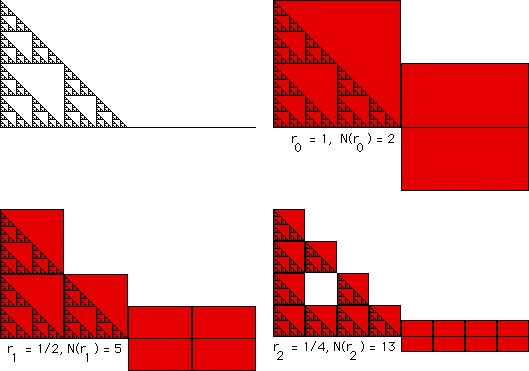

| Arrange the gasket and line segment side-by-side. What is the box-counting dimension of this shape? To compute the box-counting dimension, cover this shape with smaller and smaller boxes. We find the pattern of boxes shown in the table below the picture. | |||||
|  | |||||
| |||||
| Here we compute the exact value of the box-counting dimension. |
Return to Box-Counting Dimensions of Unions.